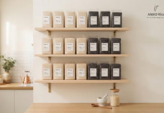

Dinh dưỡng & Sức khỏe
15/02/2026 • 5 phút đọc
Công dụng vượt trội của Gạo Lứt Huyết Rồng đối với sức khỏe
Hàm lượng chất xơ cao gấp 3 lần gạo trắng giúp kiểm soát đường huyết và hỗ trợ tim mạch hiệu quả.
Đọc tiếp →